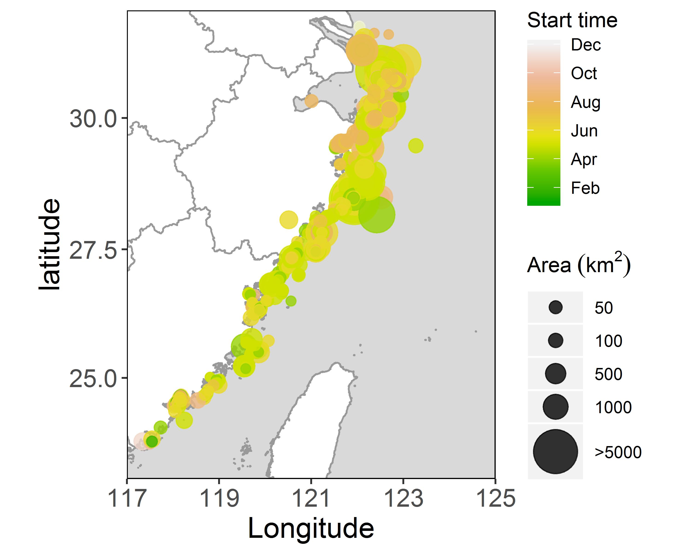

中国近海有害藻华
项目介绍
近年来，已成为中国近海突出的海洋生态灾害问题的有害藻华对人体健康、社会经济和海洋生态安全造成了威胁。定量化有害藻华的时空分布和其主要原因种的变化，探究有害藻华发生机理对改善和控制有害藻华事件发生至关重要。
基于《中国赤潮灾害调查与评价1933-2009》、《赤潮100问》书籍，1989-2018年的《中国海洋环境质量状况公报》、2000-2018年的《中国海洋灾害公报》、《中国东海海区海洋环境公报》、《浙江省海洋环境状况公报》、《舟山市海洋环境状况公报》等国家、各海区和各省市的海洋公报年等文献资料，本项目校对和补充了由余弋和黄睿整理的1933年以来的中国渤海、黄海、东海和南海的有害藻华事件，量化了其时空分布变化。 从《中国赤潮灾害调查与评价1933-2009》以及相关网站收集有记录的有害藻华相关的所有原因种的相关界门科目科属种的相关信息，统计各海域有害藻华的主要原因种的时空分布特征。
从NOAA等网站获取了各海域对应的流域氮、海洋表面温度、风速、降水等观测和再分析的数据。使用广义线性回归建立了各个海域的特定原因种的有害藻华频数变化的驱动模型以此计算出能在最大程度解释其变化的变量组合。
项目资助方桃花源生态保护基金会蓝色倡议专项，是专注于海洋保护的资助型项目，汇集了一批热心海洋保护的企业家和慈善家共同支持海洋保护工作。 将支持高校、科研院所和社会组织展开一线保护行动。在桃花源生态保护基金会的支持下，上海交大海洋学院周韫韬团队进行了中国近海有害藻华项目的工作。
- 有害藻华的定义
- 有害藻华的危害
- 有害藻华的原因种类型
了解近年来的中国近海的HABs的时空分布变化对掌握中国近海的海洋灾害变化特征以及治理改善海洋环境污染的有效工作的展开至关重要。